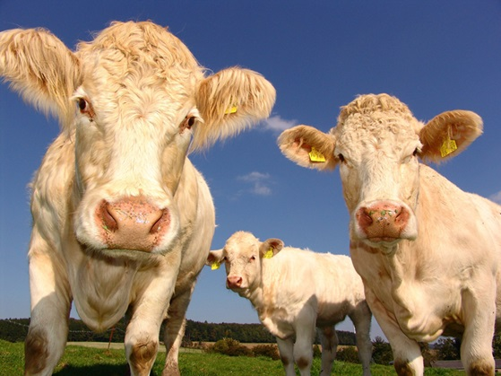
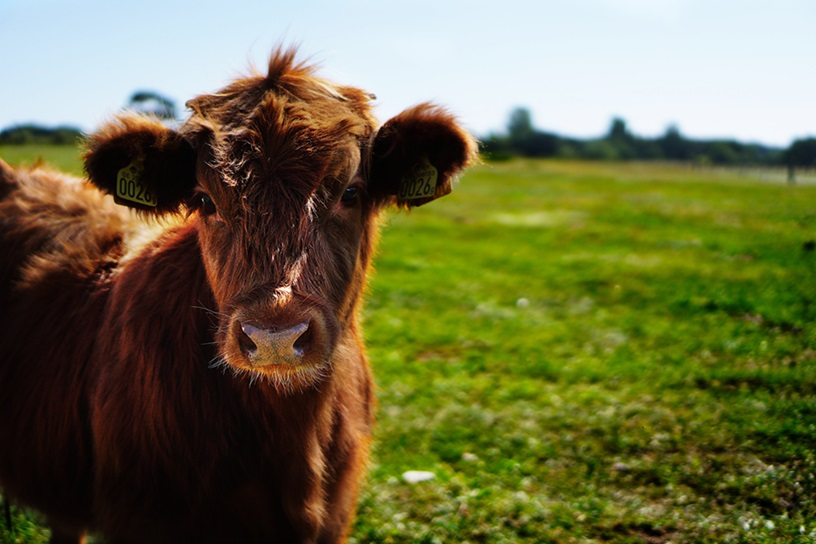

Our Calves
 Cattle (Bos taurus) are large, domesticated, bovid ungulates widely kept as livestock. They are prominent modern members of the subfamily Bovinae and the most widespread species of the genus Bos. Mature female cattle are called cows and mature male cattle are bulls. Young female cattle (heifers), young male cattle (oxen or bullocks), and castrated male cattle (steers) are all colloquially called "cows". Cattle are commonly raised for meat, for dairy products, and for leather. As draft animals, they pull carts and farm implements. In India, cattle are sacred animals. Small breeds such as the miniature Zebu are kept as pets. Visit Website for more details